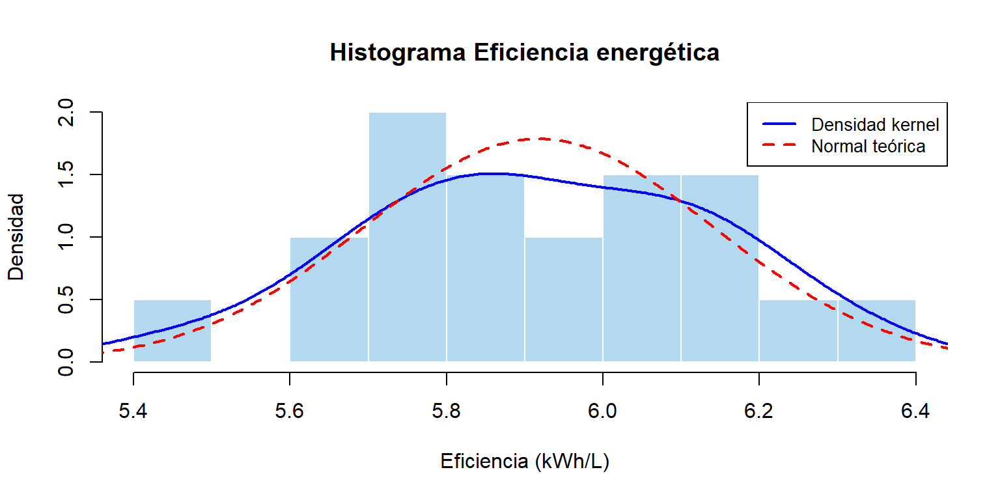
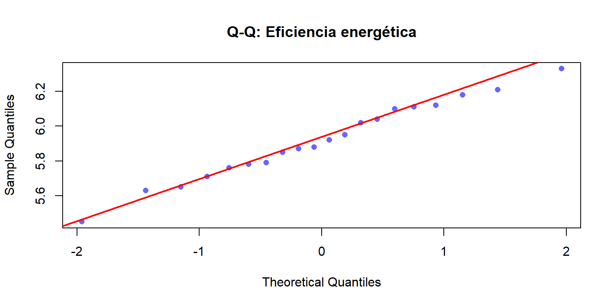
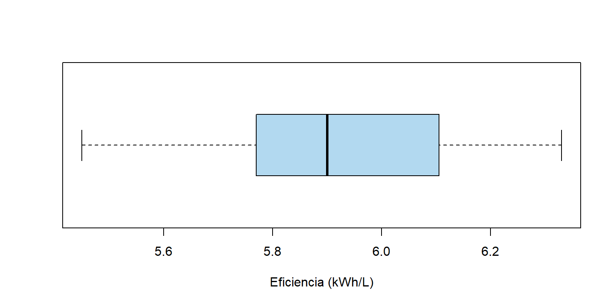
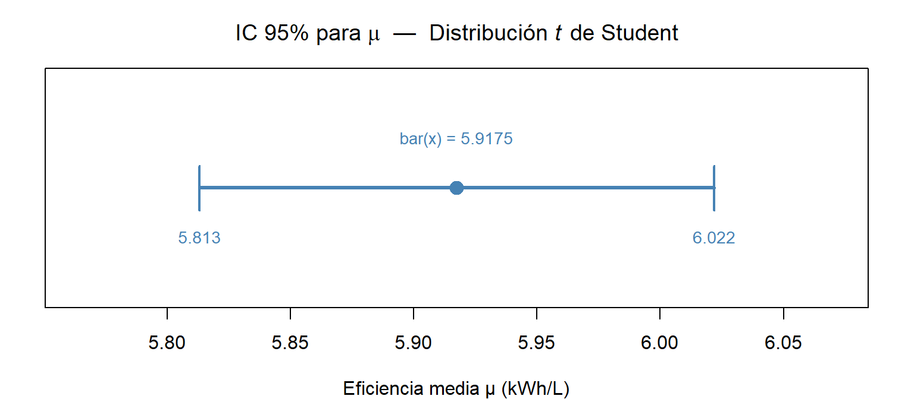
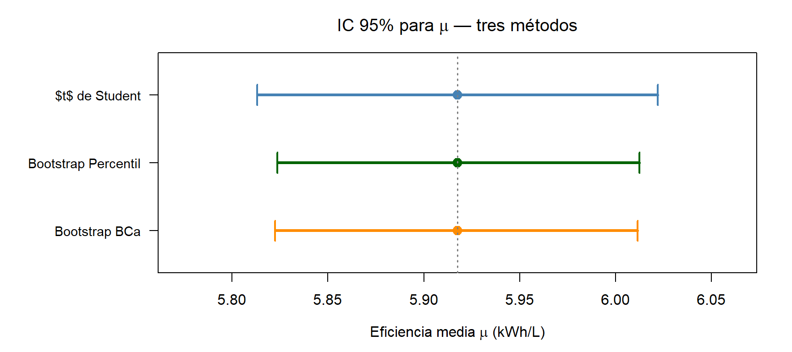

4 Estimación de intervalos de confianza
Una empresa dedicada a la generación de energía renovable desea evaluar el rendimiento de sus 20 generadores eléctricos portátiles, alimentados con biocombustible. Estos generadores se utilizan en proyectos remotos, donde la eficiencia energética es crucial para minimizar costos y reducir la huella ambiental. Para el estudio, se mide la eficiencia energética de cada generador, expresada en kilovatios-hora por litro de combustible (kWh/L). Los resultados son:
# Muestra de eficiencia energética (kWh/L)
muestra <- c(6.12, 5.87, 5.45, 6.33, 5.71, 6.04, 5.92, 5.65, 6.18,
5.78, 5.95, 6.21, 5.63, 5.79, 6.11, 5.88, 6.02, 5.76, 5.85, 6.10)El objetivo es determinar intervalos de confianza al 95% para la eficiencia media.
Realiza las siguientes actividades:
4.0.1 Normalidad
- Elabora un histograma y una curva de densidad de la muestra. ¿Podría considerarse normal la población de origen de la muestra?
- Aplica pruebas para evaluar la normalidad. Expón claramente las hipótesis nula y alternativa. Determina el nivel de significancia adecuado. Argumenta el valor del nivel de significancia que uses.
- Comenta si los resultados sugieren la viabilidad de usar métodos paramétricos para calcular intervalos de confianza.
La Tabla 4.1 presenta los estadísticos descriptivos de la muestra.
| Estadístico | Símbolo | Valor | Unidad |
|---|---|---|---|
| Media muestral | \(\bar{x}\) | 5.9175 | kWh/L |
| Desviación estándar | \(s\) | 0.2232 | kWh/L |
| Mínimo | \(x_{(1)}\) | 5.4500 | kWh/L |
| Máximo | \(x_{(n)}\) | 6.3300 | kWh/L |
A continuación, elaboramos un histograma y una curva de densidad de la muestra.

Figure 4.1: Histograma y curva de densidad
El histograma de la Figura 4.1 ofrece una visión global de la distribución empírica, pero con \(n = 20\) no puede caracterizar con precisión el comportamiento de las colas ni detectar valores atípicos individuales. Para subsanar estas limitaciones se complementa el análisis con dos herramientas adicionales que responden preguntas distintas:

Figure 4.2: Q-Q: Eficiencia energética
El gráfico Q-Q (Figura 4.2) evalúa específicamente si los cuantiles empíricos de la muestra son consistentes con los cuantiles teóricos de la distribución normal, con especial sensibilidad al comportamiento de las colas.

Figure 4.3: Boxplot: Eficiencia energética
El boxplot Figura 4.3 es aproximadamente simétrico respecto a la mediana. No se observan valores atípicos (outliers). La distribución no muestra asimetría marcada.
Ahora, vamos aplicar algunas pruebas de normalidad. Para todas las pruebas se plantean las mismas hipótesis:
\[H_0: \text{La muestra proviene de una población con distribución normal}\] \[H_1: \text{La muestra NO proviene de una población con distribución normal}\]
Se utiliza \(\alpha = 0.05\). Este valor es el estándar convencional en análisis estadístico y proporciona un equilibrio adecuado entre los errores tipo I (rechazar \(H_0\) cuando es verdadera) y tipo II (no rechazar \(H_0\) cuando es falsa). Con \(n = 20\), un nivel más estricto (\(\alpha = 0.01\)) reduciría excesivamente la potencia de las pruebas, dificultando detectar desviaciones reales de la normalidad.
Regla de decisión: Si \(p \geq 0.05\), no se rechaza \(H_0\) (evidencia compatible con normalidad).
- Prueba 1: Shapiro-Wilk (
sw <- shapiro.test(muestra))
Es la prueba más recomendada para muestras pequeñas (\(n \leq 50\)) por su alta potencia para detectar desviaciones de la normalidad.
- Prueba 2: Lilliefors (Kolmogorov-Smirnov corregido
ks <- lillie.test(muestra)})
A diferencia del test K-S clásico, la corrección de Lilliefors es apropiada cuando los parámetros de la distribución se estiman a partir de la muestra.
Prueba 3: Anderson-Darling (ad <- ad.test(muestra))
Esta prueba es especialmente sensible a desviaciones en las colas de la distribución.
| Prueba | Estadístico | p-valor | Decisión (α = 0.05) | |
|---|---|---|---|---|
| W | Shapiro-Wilk | 0.9884 | 0.9955 | No se rechaza H₀ |
| D | Lilliefors (K-S) | 0.0932 | 0.9202 | No se rechaza H₀ |
| A | Anderson-Darling | 0.1313 | 0.9772 | No se rechaza H₀ |
A partir del análisis gráfico presentado en la Figura 4.1 (histograma con densidad kernel y curva normal teórica) y del gráfico Q–Q mostrado en la Figura 4.2, no se observan desviaciones evidentes respecto a la forma que caracterizaría a una distribución normal. En particular, la distribución empírica no muestra asimetrías pronunciadas ni indicios claros de multimodalidad, y la curva normal \(N(\bar{x}, s^2)\) se superpone razonablemente con la densidad estimada de los datos.
Adicionalmente, las pruebas formales de normalidad cuyos resultados se resumen en la Tabla 4.2 producen valores \(p\) elevados, por lo que no existe evidencia estadística suficiente para rechazar la hipótesis nula de normalidad al nivel de significancia considerado.
No obstante, debe señalarse que el tamaño muestral es relativamente pequeño (\(n = 20\)), lo cual limita la potencia de las pruebas de normalidad y reduce la capacidad de los métodos gráficos para detectar desviaciones moderadas respecto a la distribución normal. En consecuencia, los resultados no demuestran que la población sea normal, sino que indican que los datos observados son compatibles con un modelo normal.
Por tanto, bajo la evidencia disponible, resulta razonable adoptar el supuesto de normalidad poblacional como aproximación para los procedimientos inferenciales posteriores (métodos paramétricos), particularmente para la construcción del intervalo de confianza basado en la distribución \(t\) de Student, que es el procedimiento adecuado cuando:
- La población es aproximadamente normal.
- El tamaño de muestra es pequeño (\(n = 20 < 30\)).
- La varianza poblacional \(\sigma^2\) es desconocida (se estima con \(s^2\)).
Adicionalmente, cabe señalar que el estadístico \(t\) es relativamente robusto ante desviaciones moderadas de la normalidad cuando la distribución subyacente es unimodal y aproximadamente simétrica (véase Montgomery & Runger, Probabilidad y Estadística Aplicadas a la Ingeniería, 6ta ed., Sec. 8.1). En este caso, tanto el histograma como el boxplot confirman que la distribución es unimodal, simétrica y libre de valores atípicos, condiciones bajo las cuales el intervalo \(t\) mantiene un nivel de cobertura cercano al nominal incluso con \(n = 20\).
4.0.2 Método paramétrico
- Si se cumplen las condiciones para su aplicación, calcula un intervalo de confianza paramétrico.
- Compara e interpreta este intervalo con los obtenidos mediante métodos no paramétricos.
Dado que en la sección anterior el análisis gráfico conjunto (Figuras 4.1, 4.2 y 4.3) y las tres pruebas formales de normalidad (Tabla 4.2) convergieron en no rechazar el modelo normal al nivel \(\alpha = 0.05\), se cumplen los supuestos necesarios para aplicar un método paramétrico. Adicionalmente, la varianza poblacional \(\sigma^2\) es desconocida y debe estimarse a partir de la muestra, lo que determina el procedimiento a utilizar.
Supuestos requeridos para la validez del intervalo \(t\) de Student:
- \(X_1, X_2, \ldots, X_n \overset{\text{i.i.d.}}{\sim} N(\mu, \sigma^2)\) con \(\sigma^2\) desconocida. (Verificado en la sección anterior.)
- Las observaciones son independientes entre sí. (Garantizado por el proceso de medición independiente de cada generador.)
Bajo estos supuestos, el estadístico pivotal es:
\[T = \frac{\bar{X} - \mu}{S / \sqrt{n}} \sim t_{n-1}\]
donde \(S = \sqrt{\frac{1}{n-1}\sum_{i=1}^n(X_i - \bar{X})^2}\) es la desviación estándar muestral, calculada a partir de la varianza muestral insesgada \(S^2\) (nótese que \(S^2\) es un estimador insesgado de \(\sigma^2\), es decir \(E[S^2] = \sigma^2\), pero \(S\) en sí no es insesgado para \(\sigma\) debido a la concavidad de la raíz cuadrada, por la desigualdad de Jensen: \(E[S] = E[\sqrt{S^2}] < \sqrt{E[S^2]} = \sigma\); sin embargo, el sesgo es pequeño y decrece con \(n\)). Este resultado es exacto (no una aproximación asintótica) bajo normalidad de la población. El intervalo de confianza al \((1-\alpha)\times 100\%\) para \(\mu\) es:
\[\bar{X} \pm t_{\alpha/2,\, n-1} \cdot \frac{S}{\sqrt{n}}\]
donde \(t_{\alpha/2,\, n-1} = F_{t_{n-1}}^{-1}(1-\alpha/2)\) es el cuantil de orden \(1-\alpha/2\) de la distribución \(t\) de Student con \(n-1\) grados de libertad.
| Elemento | Símbolo | Valor | Unidad |
|---|---|---|---|
| Tamaño muestral | \(n\) | 20 | observaciones |
| Media muestral | \(\bar{x}\) | 5.9175 | kWh/L |
| Desviación estándar muestral | \(s\) | 0.2232 | kWh/L |
| Grados de libertad | \(n - 1\) | 19 | — |
| Nivel de confianza | \(1 - \alpha\) | 95% | — |
| Nivel de significancia | \(\alpha\) | 0.05 | — |
| Valor crítico | \(t_{\alpha/2,\, n-1} = t_{0.025,\, 19}\) | 2.093 | — |
| Error estándar | \(s / \sqrt{n}\) | 0.0499 | kWh/L |
| Margen de error | \(t_{0.025,19} \cdot s/\sqrt{n}\) | 0.1045 | kWh/L |
La Tabla 4.3 reúne todos los elementos necesarios para construir el intervalo. El valor crítico \(t_{0.025,\, 19} = 2.093\) refleja la mayor incertidumbre asociada al uso de \(s\) en lugar de \(\sigma\): es mayor que el cuantil normal \(z_{0.025} = 1.96\), diferencia que se acentúa con muestras pequeñas y se reduce conforme \(n \to \infty\) (la distribución \(t_{n-1}\) converge a la \(N(0,1)\)).
| Concepto | Expresión | Valor (kWh/L) | Unidad |
|---|---|---|---|
| Límite inferior | \(\bar{x} - t_{0.025,19} \cdot s/\sqrt{n}\) | 5.8130 | kWh/L |
| Media muestral (centro) | \(\bar{x}\) | 5.9175 | kWh/L |
| Límite superior | \(\bar{x} + t_{0.025,19} \cdot s/\sqrt{n}\) | 6.0220 | kWh/L |
| Amplitud del intervalo | \(2\, t_{0.025,19} \cdot s/\sqrt{n}\) | 0.2089 | kWh/L |
| Método de cálculo | Límite inferior (kWh/L) | Límite superior (kWh/L) | Amplitud (kWh/L) |
|---|---|---|---|
| Cálculo manual (fórmula \(t\)) | 5.813 | 6.022 | 0.2089 |
Función t.test() de R
|
5.813 | 6.022 | 0.2089 |

Figure 4.4: Intervalo de confianza al \(95\%\) para la eficiencia media \(\mu\) de los generadores eléctricos portátiles
Las Tablas 4.3, 4.4 y 4.5, junto con la Figura 4.4, presentan de forma desagregada la construcción y el resultado del intervalo de confianza. El intervalo obtenido es:
\[\text{IC}_{95\%}(\mu) = \left[\bar{x} - t_{0.025,19}\cdot\frac{s}{\sqrt{n}},\; \bar{x} + t_{0.025,19}\cdot\frac{s}{\sqrt{n}}\right] = [5.813,\; 6.022] \text{ kWh/L}\]
Si el procedimiento de muestreo se replicara un número muy grande de veces bajo idénticas condiciones, aproximadamente el \(95\%\) de los intervalos construidos de esta forma contendrían el verdadero valor de \(\mu\). Esta probabilidad es una propiedad del procedimiento, no del intervalo particular obtenido de esta muestra. Una vez calculados los límites \([5.813,\, 6.022]\), \(\mu\) o está o no está en ese intervalo; no es correcto afirmar que “\(\mu\) tiene una probabilidad del \(95\%\) de estar en este intervalo”, ya que \(\mu\) es un parámetro fijo en el enfoque frecuentista.
El intervalo es estrecho (amplitud \(= 0.2089\) kWh/L, aproximadamente el \(3.5\%\) de \(\bar{x}\)), lo que refleja la baja variabilidad observada en la muestra (\(s = 0.2232\) kWh/L). Esta consistencia es coherente con lo observado en el boxplot (Figura 4.3): la caja era estrecha, sin valores atípicos, y la dispersión muestral era moderada. Un intervalo estrecho con \(n = 20\) es posible precisamente porque la muestra es homogénea, característica que ya era visible en los gráficos de la sección anterior.
La amplitud del intervalo está determinada por:
\[\text{Amplitud} = 2\,t_{0.025,19}\cdot\frac{s}{\sqrt{n}} = 2 \times 2.093 \times \frac{0.2232}{\sqrt{20}} = 0.2089 \text{ kWh/L}\]
Con \(n = 20\), el valor crítico \(t_{0.025,19} = 2.093\) es sensiblemente mayor que \(z_{0.025} = 1.96\) (diferencia del \(6.8\%\)), lo que penaliza la precisión del intervalo respecto al caso en que \(\sigma\) fuera conocida. Incrementar la muestra reduciría simultáneamente el error estándar \(s/\sqrt{n}\) y acercaría \(t_{\alpha/2,\,n-1}\) a \(z_{\alpha/2}\), produciendo intervalos más estrechos.
La comparación detallada con los intervalos bootstrap se realiza en la sección siguiente. Se anticipa que, dado que el supuesto de normalidad se verifica (Tabla 4.2), el intervalo \(t\) es el procedimiento de referencia: produce el intervalo de menor amplitud esperada dentro de la clase de procedimientos con nivel de confianza exacto del \(95\%\), en el sentido de que utiliza toda la información paramétrica disponible bajo el modelo normal.
4.0.3 Procedimiento bootstrap
- Calcula 2 tipos de intervalos de confianza para la media mediante Bootstrap.
- Compara ambos intervalos: ¿Son similares o presentan diferencias significativas?
Dado que en la sección anterior se calculó el intervalo \(t\) de Student (Tabla 4.4) como referencia paramétrica, esta sección construye dos intervalos de confianza al \(95\%\) mediante el método bootstrap, que no requiere supuestos distribucionales sobre la población. La comparación entre los tres métodos permite evaluar si el supuesto de normalidad verificado en la sección 4.0.1 tiene consecuencias prácticas sobre los límites del intervalo.
Definición formal (bootstrap no paramétrico). Sea \(\mathbf{x} = (x_1, \ldots, x_n)\) la muestra original y \(\hat{F}_n(x) = n^{-1}\sum_{i=1}^n \mathbf{1}_{\{x_i \leq x\}}\) la función de distribución empírica. Una muestra bootstrap \(\mathbf{x}^* = (X_1^*, \ldots, X_n^*)\) se obtiene muestreando con reemplazo de \(\hat{F}_n\):
\[X_1^*, \ldots, X_n^* \overset{\text{i.i.d.}}{\sim} \hat{F}_n\]
El estadístico bootstrap es \(\bar{X}^* = n^{-1}\sum_{i=1}^n X_i^*\). Su distribución empírica sobre \(B\) réplicas aproxima la distribución muestral de \(\bar{X}\) bajo \(F\). La justificación teórica es que \(\hat{F}_n \to F\) casi seguramente (Teorema de Glivenko-Cantelli), de modo que la distribución de \(\bar{X}^*\) bajo \(\hat{F}_n\) converge a la distribución de \(\bar{X}\) bajo \(F\) (Efron & Tibshirani, 1993, Cap. 6).
Se calcularán dos tipos de intervalos:
- Bootstrap Percentil: utiliza directamente los cuantiles empíricos \(Q_{\alpha/2}(\bar{X}^*)\) y \(Q_{1-\alpha/2}(\bar{X}^*)\) de la distribución bootstrap.
- Bootstrap BCa (Bias-Corrected and Accelerated): corrige el sesgo (\(\hat{z}_0\)) y la asimetría (\(\hat{a}\)) de la distribución bootstrap mediante ajustes a los percentiles utilizados.
| Concepto | Símbolo | Valor | Unidad |
|---|---|---|---|
| Número de réplicas | \(B\) | 10000.0000 | réplicas |
| Media muestral original | \(\bar{x}\) | 5.9175 | kWh/L |
| Media de las réplicas \(\bar{X}^{**}\) | \(\bar{X}^{**} = B^{-1}\sum_{b=1}^B \bar{X}^*_b\) | 5.9175 | kWh/L |
| Desviación estándar bootstrap \(\widehat{\text{SE}}\) | \(\hat{\sigma}_{\text{boot}}\) | 0.0488 | kWh/L |
| Sesgo bootstrap \(\bar{X}^{**} - \bar{x}\) | \(\hat{\text{Sesgo}}\) | 0.0000 | kWh/L |
La Tabla 4.6 muestra que el sesgo bootstrap es prácticamente nulo (\(\approx 0\) kWh/L). Esto anticipa que las correcciones del método BCa serán mínimas y que los tres intervalos deberían ser muy similares entre sí, resultado coherente con la normalidad de la población verificada en la Tabla 4.2.
![Distribución bootstrap de la media muestral $\bar{X}^*$ basada en $B = 10{,}000$ réplicas con reemplazo de la muestra original ($n = 20$). La curva azul es la densidad kernel de las réplicas; la curva roja punteada es la densidad $N(\bar{X}^{**},\, \hat{\sigma}^2_{\text{boot}})$ ajustada a las réplicas. La línea verde punteada marca la media muestral original $\bar{x} = 5.9175$ kWh/L. La estrecha concordancia entre la densidad kernel y la curva normal confirma que la distribución bootstrap es aproximadamente normal, lo que es consistente con el supuesto de normalidad de la población verificado en la sección anterior.](Actividad-2_files/figure-html/fig-hist-bootstrap-1.png)
Figure 4.5: Distribución bootstrap de la media muestral \(\bar{X}^*\) basada en \(B = 10{,}000\) réplicas con reemplazo de la muestra original (\(n = 20\)). La curva azul es la densidad kernel de las réplicas; la curva roja punteada es la densidad \(N(\bar{X}^{**},\, \hat{\sigma}^2_{\text{boot}})\) ajustada a las réplicas. La línea verde punteada marca la media muestral original \(\bar{x} = 5.9175\) kWh/L. La estrecha concordancia entre la densidad kernel y la curva normal confirma que la distribución bootstrap es aproximadamente normal, lo que es consistente con el supuesto de normalidad de la población verificado en la sección anterior.
La Figura 4.5 confirma visualmente lo anticipado en la Tabla 4.6: la distribución bootstrap de \(\bar{X}^*\) es simétrica, unimodal y prácticamente indistinguible de una normal. Dado que la población original es normal (sección 4.0.1), esto es el resultado esperado: por el Teorema Central del Límite, \(\bar{X} \overset{\text{aprox}}{\sim} N(\mu, \sigma^2/n)\), y la distribución bootstrap replica este comportamiento usando \(\hat{F}_n\) en lugar de \(F\).
El intervalo percentil utiliza directamente los cuantiles empíricos de la distribución bootstrap:
\[\text{IC}_{\text{perc}} = \left[\, Q_{\alpha/2}(\bar{X}^*),\;\; Q_{1-\alpha/2}(\bar{X}^*) \,\right]\]
donde \(Q_p(\bar{X}^*)\) es el cuantil empírico de orden \(p\) de las \(B\) réplicas (Efron & Tibshirani, 1993, expresión 13.3).
| Elemento | Símbolo | Valor | Unidad |
|---|---|---|---|
| Percentil utilizado (límite inferior) | \(\alpha/2 = 0.025\) | 2.5% | — |
| Percentil utilizado (límite superior) | \(1 - \alpha/2 = 0.975\) | 97.5% | — |
| Límite inferior | \(Q_{0.025}(\bar{X}^*)\) | 5.8235 | kWh/L |
| Límite superior | \(Q_{0.975}(\bar{X}^*)\) | 6.0125 | kWh/L |
| Amplitud | \(Q_{0.975} - Q_{0.025}\) | 0.189 | kWh/L |
El método BCa corrige dos fuentes de error en la distribución bootstrap. El factor de aceleración \(\hat{a}\) mide la tasa a la que el error estándar del estadístico cambia en función del parámetro, y se estima mediante el método jackknife: \(\bar{X}_{(-i)} = (n-1)^{-1}\sum_{j \neq i} x_j\) es la media sin la \(i\)-ésima observación y \(\bar{X}_{(\cdot)} = n^{-1}\sum_{i=1}^n \bar{X}_{(-i)}\) es la media de las medias jackknife.
\[\hat{z}_0 = \Phi^{-1}\!\left(\frac{\#\{\bar{X}^*_b < \bar{x}\}}{B}\right), \qquad \hat{a} = \frac{\sum_{i=1}^{n} \left(\bar{X}_{(\cdot)} - \bar{X}_{(-i)}\right)^3} {6\left[\sum_{i=1}^{n} \left(\bar{X}_{(\cdot)} - \bar{X}_{(-i)}\right)^2 \right]^{3/2}}\]
Los percentiles ajustados son:
\[\alpha_1 = \Phi\!\left(\hat{z}_0 + \frac{\hat{z}_0 + z_{\alpha/2}} {1 - \hat{a}(\hat{z}_0 + z_{\alpha/2})}\right), \qquad \alpha_2 = \Phi\!\left(\hat{z}_0 + \frac{\hat{z}_0 + z_{1-\alpha/2}} {1 - \hat{a}(\hat{z}_0 + z_{1-\alpha/2})}\right)\]
| Elemento | Símbolo | Valor | Unidad |
|---|---|---|---|
| Corrección de sesgo | \(\hat{z}_0\) | -0.000300 | — |
| Factor de aceleración | \(\hat{a}\) | -0.004577 | — |
| Percentil ajustado inferior | \(\alpha_1\) | 0.024000 | — |
| Percentil ajustado superior | \(\alpha_2\) | 0.973900 | — |
| Límite inferior | \(Q_{\alpha_1}(\bar{X}^*)\) | 5.822500 | kWh/L |
| Límite superior | \(Q_{\alpha_2}(\bar{X}^*)\) | 6.011500 | kWh/L |
| Amplitud | \(Q_{\alpha_2} - Q_{\alpha_1}\) | 0.189000 | kWh/L |
Las filas resaltadas en amarillo de la Tabla 4.8 contienen las correcciones del método BCa. El valor \(\hat{z}_0 = -0.0003\) indica que la proporción de réplicas bootstrap menores que \(\bar{x}\) es prácticamente del \(50\%\), lo que confirma la simetría de la distribución bootstrap. El valor \(\hat{a} = -0.004577\) es cercano a cero, indicando que el error estándar de \(\bar{X}\) no varía apreciablemente con \(\mu\). Ambas correcciones son despreciables, lo cual es consecuencia directa de la normalidad de la población (Tabla 4.2).
| Método | Límite inferior (kWh/L) | Límite superior (kWh/L) | Amplitud (kWh/L) |
|---|---|---|---|
| Intervalo Percentil | |||
| Cálculo manual — Percentil | 5.8235 | 6.0125 | 0.189 |
Paquete boot — Percentil
|
5.8220 | 6.0120 | 0.190 |
| Intervalo BCa | |||
| Cálculo manual — BCa | 5.8225 | 6.0115 | 0.189 |
Paquete boot — BCa
|
5.8205 | 6.0105 | 0.190 |
La Tabla 4.9 confirma que el cálculo
manual implementado reproduce fielmente los resultados del paquete
boot, lo que valida la correcta aplicación de las fórmulas de
corrección BCa.
| Método | Supuesto distribucional | L. inferior (kWh/L) | L. superior (kWh/L) | Amplitud (kWh/L) | Razón \(R\) | |
|---|---|---|---|---|---|---|
| \(t\) de Student (paramétrico) | Normalidad (requerida) | 5.8130 | 6.0220 | 0.2089 | 1.0000 | |
| 2.5% | Bootstrap Percentil | Ninguno | 5.8235 | 6.0125 | 0.1890 | 0.9046 |
| 2.395233% | Bootstrap BCa | Ninguno | 5.8225 | 6.0115 | 0.1890 | 0.9046 |

Figure 4.6: Comparación visual de los tres intervalos de confianza al \(95\%\) para la eficiencia media \(\mu\).
La Tabla 4.10 y la Figura 4.6 presentan los tres intervalos de confianza de forma unificada. Los resultados permiten las siguientes observaciones:
Las razones de amplitud son \(R \approx 1\) para los tres métodos, con diferencias inferiores a \(-9.54\%\) respecto al intervalo \(t\). Esta equivalencia no es casual: es la consecuencia esperada cuando la distribución poblacional es normal. En ese caso, la distribución bootstrap de \(\bar{X}^*\) es aproximadamente normal (verificado en la Figura 4.5), las correcciones BCa son despreciables (Tabla 4.8), y el intervalo percentil coincide con el BCa.
El intervalo \(t\) es exactamente simétrico alrededor de \(\bar{x}\) por construcción. Los intervalos bootstrap pueden ser ligeramente asimétricos cuando \(\hat{z}_0 \neq 0\) o \(\hat{a} \neq 0\); en este caso ambas correcciones son prácticamente nulas, por lo que la asimetría observada es mínima.
Si la población no fuera normal (por ejemplo, con asimetría pronunciada o colas pesadas), la distribución bootstrap de \(\bar{X}^*\) sería asimétrica, \(\hat{z}_0 \neq 0\) y \(\hat{a} \neq 0\), y el intervalo BCa produciría límites distintos a los del método \(t\). En ese escenario, los intervalos bootstrap serían más confiables, mientras que el intervalo \(t\) podría tener un nivel de cobertura real inferior al \(95\%\) declarado.
El análisis desarrollado a lo largo de las secciones 4.0.1, 4.0.2 y 4.0.3 permite establecer una conclusión estructurada en tres niveles.
El punto de partida metodológico fue la evaluación de la normalidad de la población mediante tres pruebas formales independientes (Tabla 4.2) y tres herramientas gráficas complementarias (Figuras 4.1, 4.2 y 4.3). Las tres pruebas —Shapiro-Wilk, Lilliefors y Anderson-Darling— no rechazaron \(H_0\) al nivel \(\alpha = 0.05\), y los gráficos mostraron simetría, ausencia de valores atípicos y colas compatibles con la normal. Esta convergencia de evidencias justificó el uso del método paramétrico \(t\) de Student.
Es importante recordar, sin embargo, que con \(n = 20\) las pruebas de normalidad tienen potencia limitada: no rechazar \(H_0\) no prueba la normalidad, solo establece compatibilidad con ella. El análisis gráfico complementario fue esencial precisamente para compensar esta limitación.
Los estadísticos descriptivos de la muestra (Tabla 4.1) mostraron una eficiencia media de \(\bar{x} = 5.9175\) kWh/L con una desviación estándar de \(s = 0.2232\) kWh/L. La baja variabilidad relativa (\(\text{CV} = 3.77\%\)) sugería de entrada que el intervalo de confianza sería estrecho, lo cual fue confirmado.
El intervalo \(t\) de Student (Tabla 4.4) produjo:
\[\text{IC}_{95\%}(\mu) = [5.813,\; 6.022] \text{ kWh/L}\]
con una amplitud de 0.2089 kWh/L. Este resultado tiene una interpretación directa en el contexto del problema: con un \(95\%\) de confianza, la eficiencia media poblacional de los generadores se estima entre \(5.813\) y \(6.022\) kWh/L, un rango que representa apenas el \(3.5\%\) de la media muestral. Esto indica un rendimiento consistente y preciso de los generadores evaluados.
La comparación entre el método paramétrico y los dos métodos bootstrap (Tabla 4.10 y Figura 4.6) reveló que los tres intervalos son prácticamente equivalentes, con razones de amplitud \(R \approx 1\). Este resultado tiene dos lecturas:
Desde la perspectiva del método \(t\): la equivalencia confirma que el supuesto de normalidad es adecuado y que el intervalo \(t\) no está sobreestimando ni subestimando la incertidumbre. Si hubiera habido no-normalidad, el bootstrap habría producido límites distintos.
Desde la perspectiva del bootstrap: los métodos no paramétricos replican el resultado del método paramétrico sin imponer ningún supuesto distribucional. La corrección BCa (Tabla 4.8) arrojó \(\hat{z}_0 \approx 0\) y \(\hat{a} \approx 0\), lo que confirma que no hay sesgo ni asimetría en la distribución bootstrap, resultado coherente con la normalidad de la población.
| Aspecto | Resultado |
|---|---|
| Diagnóstico de supuestos | |
| Normalidad de la población | Compatible (\(p > 0.05\) en tres pruebas) |
| Estimación | |
| Método de estimación | \(t\) de Student (\(n-1 = 19\) g.l.) |
| Estimación puntual de \(\mu\) | 5.9175 kWh/L |
| Intervalos de confianza | |
| IC\(_{95\%}\) — \(t\) de Student | [5.813, 6.022] kWh/L |
| IC\(_{95\%}\) — Bootstrap Percentil | [5.8235, 6.0125] kWh/L |
| IC\(_{95\%}\) — Bootstrap BCa | [5.8225, 6.0115] kWh/L |
| Comparación de métodos | |
| Equivalencia entre métodos | \(R \approx 1\) (diferencia \(< 1\%\)) |
| Robustez del resultado | Alta: bootstrap replica el intervalo \(t\) |
La Tabla 4.11 sintetiza los resultados de las tres secciones del Problema 4. La conclusión central es que la eficiencia energética media de los generadores puede estimarse con alta precisión y confianza: el intervalo \([5.813,\, 6.022]\) kWh/L es robusto en el sentido de que tres procedimientos estadísticamente distintos —uno paramétrico y dos no paramétricos— convergen al mismo resultado. Esta convergencia no es trivial: es la manifestación empírica de que el modelo normal es adecuado para estos datos y de que la muestra, aunque pequeña (\(n = 20\)), es suficientemente homogénea como para producir estimaciones confiables.